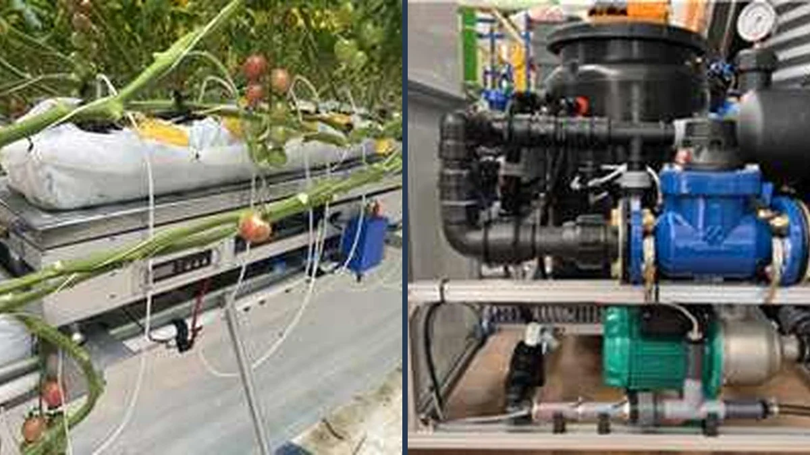

AI 이삭이 활용법｜작물 사진과 재배기록으로 질문을 구체화하기

농업 AI 활용 참고 사진: 토마토 재배와 AI-뉴티 양액장치. AI 이삭이 앱·행사 현장 사진은 아닙니다.
AI 이삭이 체험 행사가 끝났어도 농가에서 확인할 것은 남습니다. 품종·작형·증상 시작일·최근 관리 기록을 함께 질문하는 습관입니다. AI의 답은 농장 상태를 살펴볼 출발점으로 활용하고, 농약·비료 투입이나 병해 확진은 근거를 추가 확인하세요.
공개 행사와 실제 서비스 기능을 구분하세요
농촌진흥청은 11월 25~27일 정부혁신 박람회에서 문자·음성 상담과 사진 활용 등을 소개했습니다. 서비스 2.0은 앞선 공식 발표에서도 공개됐으므로 이번 행사를 최초 출시로 읽으면 안 됩니다. 기능과 화면은 앱 업데이트·사용 환경에 따라 다를 수 있으며, 지금 열려 있는 화면에서 이용 가능한 메뉴를 확인해야 합니다.
질문을 잘게 나누면 빠진 조건을 발견합니다
“잎이 노란데 무슨 약을 쓰나요?”보다 지역, 작물·품종, 정식일, 토경·수경 여부, 발생 위치와 비율을 먼저 적으세요. 사진은 포장 전체, 식물 전체, 잎 앞뒤와 뿌리 주변을 구분하고 촬영 날짜를 붙입니다. 다른 날 사진을 섞으면 진행 속도를 잘못 판단할 수 있습니다. 농장 위치·사람 얼굴 등 불필요한 개인정보는 질문에 넣지 않아도 됩니다.
| 입력 항목 | 좋은 기록 | 답을 검증할 자료 |
|---|---|---|
| 작물·환경 | 품종/작형/정식일 | 종자·모종 및 영농일지 |
| 증상 | 시작일/위치/발생 비율 | 같은 위치의 날짜별 사진 |
| 최근 작업 | 물·비료·약제·환기 변경 | 작업량과 제품 라벨 |
| 요청 | 원인 후보와 확인 순서 | 공식 자료·현장 진단 |
답변을 작업 지시로 바꾸기 전 세 번 확인합니다
첫째, 답이 내 작물·재배 방식에 맞는지 봅니다. 둘째, 근거 자료의 작성일과 적용 지역을 확인합니다. 셋째, 제안된 조치의 조건과 부작용을 묻습니다. 병징이 빠르게 번지거나 원인을 구분하기 어렵다면 농업기술센터에 사진·재배기록을 함께 전달하세요. 사진만으로 병해와 영양·수분 장해가 항상 구별되는 것은 아닙니다.
그대로 복사해 쓸 질문 예시
“○○지역 시설 토마토, 정식 후 ○일, 토경재배입니다. ○월 ○일부터 하엽 ○%에서 증상이 보입니다. 최근 관수와 비료 변경은 ○○입니다. 가능한 원인, 현장에서 추가 확인할 항목, 당장 하지 말아야 할 작업을 나눠 알려주세요. 답변 근거의 출처와 날짜도 보여주세요.”처럼 빈칸을 채워 입력해 보세요.
작업 전 점검표
- 사진 촬영일과 발생 위치를 적었다
- AI 답의 출처와 적용 조건을 확인했다
- 처방이 필요한 문제는 담당 전문가에게 연결했다
좋은 질문은 답을 단정하게 만드는 도구가 아니라, 현장에서 확인할 조건을 빠뜨리지 않게 만드는 도구입니다.